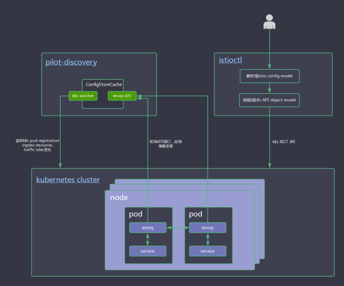

本文系转载，原文作者：郑伟，小米信息部技术架构组
本系列文章主要从源码（35e2b904）出发，对istio做深入剖析，让大家对istio有更深的认知，从而方便平时排查问题。不了解Service Mesh和Istio的同学请先阅读敖小剑老师如下文章进行概念上的理解：
服务治理配置生效流程解析
如果大家安装bookinfo并执行过文档中的task，可以了解到，所有服务治理流程都是通过istioctl工具，执行指定yaml配置文件来实现。那么从执行istioctl指令到配置文件生效，整个流程到底是什么样的呢？下面给大家做一个简单的介绍。
整个配置生效的流程图如下所示：

配置文件解析
以task request-routing为例，我们的需求是把名为jason的用户访问reviews服务的版本切换为v2。route-rule-reviews-test-v2.yaml内容如下所示：
apiVersion: config.istio.io/v1alpha2
kind: RouteRule
metadata:
name: reviews-test-v2
spec:
destination:
name: reviews
precedence: 2
match:
request:
headers:
cookie:
regex: "^(.*?;)?(user=jason)(;.*)?$"
route:
- labels:
version: v2
解析并执行istioctl create指令
通过istioctl create -f samples/bookinfo/kube/route-rule-reviews-test-v2.yaml指令来使规则生效，执行istioctl create指令运行的相关代码入口如下：
istio/cmd/istioctl/main.go#postCmd#113行。
postCmd = &cobra.Command{
Use: "create",
Short: "Create policies and rules",
Example: "istioctl create -f example-routing.yaml",
RunE: func(c *cobra.Command, args []string) error {
if len(args) != 0 {
c.Println(c.UsageString())
return fmt.Errorf("create takes no arguments")
}
// varr为转换成功的istio内部model.Config切片，包括routeRule、gateway、ingressRule、egressRule、policy等
// others是不能转换成model.Config的k8s object wrapper切片，后面会当成mixer配置来处理
varr, others, err := readInputs()
if err != nil {
return err
}
if len(varr) == 0 && len(others) == 0 {
return errors.New("nothing to create")
}
...
}
}
解析出model.Config切片、crd.istioKind切片流程
- model.Config 为istio配置单元
- crd.IstioKind 对k8s API对象做了一层封装
readInput函数解析create命令的相关参数（比如-f），如果是-f指定的文件是有效文件，则会调用pilot/pkg/config/kube/crd包的ParseInputs函数解析该文件。
func readInputs() ([]model.Config, []crd.IstioKind, error) {
var reader io.Reader
...
// 读取指定yaml文件
if in, err = os.Open(file); err != nil {
return nil, nil, err
}
defer func() {
if err = in.Close(); err != nil {
log.Errorf("Error: close file from %s, %s", file, err)
}
}()
reader = in
...
input, err := ioutil.ReadAll(reader)
...
return crd.ParseInputs(string(input))
}
ParseInputs函数内部逻辑：
func ParseInputs(inputs string) ([]model.Config, []IstioKind, error) {
var varr []model.Config
var others []IstioKind
reader := bytes.NewReader([]byte(inputs))
var empty = IstioKind{}
// We store configs as a YaML stream; there may be more than one decoder.
yamlDecoder := kubeyaml.NewYAMLOrJSONDecoder(reader, 512*1024)
for {
obj := IstioKind{}
// 从reader中反序列化出IstioKind实例obj
err := yamlDecoder.Decode(&obj)
...
schema, exists := model.IstioConfigTypes.GetByType(CamelCaseToKabobCase(obj.Kind))
...
config, err := ConvertObject(schema, &obj, "")
...
if err := schema.Validate(config.Spec); err != nil {
return nil, nil, fmt.Errorf("configuration is invalid: %v", err)
}
varr = append(varr, *config)
}
return varr, others, nil
}
ParseInputs返回三种类型的值[]Config、[]IstioKind、error。
istio/pilot/pkg/model#[]Config
其中Config为Istio内部的配置单元，包含匿名ConfigMeta以及ConfigMeta序列化的protobuf message；用户指定的yaml配置会被解析成相应的实例。
pilot/pkg/config/kube/crd#[]IstioKind
IstioKind为k8s API object的一层封装，内部包含两个匿名结构体和一个map：
type IstioKind struct {
meta_v1.TypeMeta `json:",inline"`
meta_v1.ObjectMeta `json:"metadata"`
Spec map[string]interface{} `json:"spec"`
}
-
IstioKindk8s.io/apimachinery/pkg/apis/meta/v1#TypeMetaTypeMeta包含了k8s REST资源类型（如
RouteRule）、k8s API版本号（如config.istio.io/v1alpha2）。 -
k8s.io/apimachinery/pkg/apis/meta/v1#ObjectMetaObjectMeta包含了k8s 资源对象包含的各必要字段，包括Name、Namespace、UID等。
-
Spec一个存储Spec数据的map。
上述代码将string类型的配置反序列化成IstioKind实例后，通过model.IstioConfigTypes.GetByType()方法获取istio的[]ProtoSchema实例。
// ConfigDescriptor 是一个由ProtoSchema组成的切片
type ConfigDescriptor []ProtoSchema
// ProtoSchema结构体定义了配置类型名称和protobuf消息的双向映射
type ProtoSchema struct {
Type string // 配置的proto类型，如route-rule
Plural string // type复数形式，如route-rules
Group string // 配置的proto组名，如config
Version string // 配置API的版本号，如一lpha2
MessageName string // 配置的proto message名，如istio.routing.v1alpha1.RouteRule
Gogo bool // 是否为gogo protobuf编码
Validate func(config proto.Message) error // protobuf校验函数
}
拿到schema后，通过ConvertObject方法，将k8s风格的object实例转换成istio内部的Config模型实例，并根据schema类型调用相应的校验函数对protobuf message进行校验。
将配置变更提交到k8s
istio/cmd/istioctl/main.go#postCmd#140行。
for _, config := range varr {
// 初始化namespace数据
if config.Namespace, err = handleNamespaces(config.Namespace); err != nil {
return err
}
// 构造k8s crd.Client实例，crd.Client包含初始化的apiVerison到restClient映射的map。
// 对每一种apiVerison（由schema.Group、"istio.io"、schema.Version组成的string，如"config.istio.io/v1alpha2"、"networking.istio.io/v1alpha3"等）
// 都对应一个crd.restClient实例。
var configClient *crd.Client
if configClient, err = newClient(); err != nil {
return err
}
var rev string
// 通过k8s REST接口执行配置
if rev, err = configClient.Create(config); err != nil {
return err
}
fmt.Printf("Created config %v at revision %v\n", config.Key(), rev)
}
configClient.Create方法执行流程如下：
func (cl *Client) Create(config model.Config) (string, error) {
rc, ok := cl.clientset[apiVersionFromConfig(&config)]
...
// 根据config.Type获取schema
schema, exists := rc.descriptor.GetByType(config.Type)
...
// 调用schema指定的Validate函数，对Spec这个protobuff进行校验
if err := schema.Validate(config.Spec); err != nil {
return "", multierror.Prefix(err, "validation error:")
}
// ConvertConfig函数将model.Config实例转换成IstioObject实例。
// IstioObject是一个k8s API object的接口，crd包下有很多结构体实现了该接口，如MockConfig、RouteRule等
out, err := ConvertConfig(schema, config)
...
// 检索clientset map，用指定的restClient实例发送POST请求，使配置生效。
obj := knownTypes[schema.Type].object.DeepCopyObject().(IstioObject)
err = rc.dynamic.Post().
Namespace(out.GetObjectMeta().Namespace).
Resource(ResourceName(schema.Plural)).
Body(out).
Do().Into(obj)
if err != nil {
return "", err
}
return obj.GetObjectMeta().ResourceVersion, nil
}
pilot-discovery初始化
pilot/cmd/pilot-discovery/main.go#57行，构造discoveryServer实例。
...
discoveryServer, err := bootstrap.NewServer(serverArgs)
if err != nil {
return fmt.Errorf("failed to create discovery service: %v", err)
}
...
监听k8s相关资源变更
NewServer函数内部流程如下：
func NewServer(args PilotArgs) (*Server, error) {
...
// 初始化pilot配置控制器，根据pilot-discovery启动指令，初始化配置控制器。
// 默认只会初始化kube配置控制器（kubeConfigController，它实现了model.ConfigStoreCache接口）。
// kubeConfigController会watch k8s pod registration 、ingress resources、traffic rules等变化。
if err := s.initConfigController(&args); err != nil {
return nil, err
}
// 初始化服务发现控制器，控制器内部会构造K8sServiceControllers。
if err := s.initServiceControllers(&args); err != nil {
return nil, err
}
// 初始化DiscoveryService实例，实例内部注册了envoy xDS路由。
// kubeConfigController中watch到变更后，envoy轮询xDS接口，获取变更。
if err := s.initDiscoveryService(&args); err != nil {
return nil, err
}
...
}
注册envoy xDS路由
initDiscoveryServic方法内部流程如下：
func (s *Server) initDiscoveryService(args *PilotArgs) error {
// 构造pilot runtime environment。environment中保存了kubeConfigController、serviceController等。
environment := model.Environment{
Mesh: s.mesh,
IstioConfigStore: model.MakeIstioStore(s.configController),
ServiceDiscovery: s.ServiceController,
ServiceAccounts: s.ServiceController,
MixerSAN: s.mixerSAN,
}
// 构造DiscoveryService实例。
discovery, err := envoy.NewDiscoveryService(
s.ServiceController,
s.configController,
environment,
args.DiscoveryOptions,
)
}
NewDiscoveryService方法内部流程如下：
func NewDiscoveryService(ctl model.Controller, configCache model.ConfigStoreCache,
environment model.Environment, o DiscoveryServiceOptions) (*DiscoveryService, error) {
out := &DiscoveryService{
Environment: environment, // 将environment赋值给Environment成员。
sdsCache: newDiscoveryCache("sds", o.EnableCaching),
cdsCache: newDiscoveryCache("cds", o.EnableCaching),
rdsCache: newDiscoveryCache("rds", o.EnableCaching),
ldsCache: newDiscoveryCache("lds", o.EnableCaching),
}
container := restful.NewContainer()
...
// 注册web service容器。
out.Register(container)
}
out.Register方法内部流程如下：
func (ds *DiscoveryService) Register(container *restful.Container) {
ws := &restful.WebService{}
ws.Produces(restful.MIME_JSON)
...
// 注册Envoy xDS（SDS、CDS、RDS、LDS）路由
// 注册 Envoy RDS(Route discovery service)路由。https://www.envoyproxy.io/docs/envoy/latest/api-v1/route_config/rds
// RDS可以与SDS、EDS协同工作，来构建用户指定的路由拓扑（如流量切换、蓝绿部署等）。
ws.Route(ws.
GET(fmt.Sprintf("/v1/routes/{%s}/{%s}/{%s}", RouteConfigName, ServiceCluster, ServiceNode)).
To(ds.ListRoutes).
Doc("RDS registration").
Param(ws.PathParameter(RouteConfigName, "route configuration name").DataType("string")).
Param(ws.PathParameter(ServiceCluster, "client proxy service cluster").DataType("string")).
Param(ws.PathParameter(ServiceNode, "client proxy service node").DataType("string")))
// 注册 Envoy LDS(Listener discovery service)路由。https://www.envoyproxy.io/docs/envoy/latest/configuration/listeners/lds
// Envoy可以从通过这个接口动态获取需要新的Listener信息，从而在运行时动态实例化Listener。
// Listener可以用来处理不同的代理任务（如速率限制、HTTP连接管理、原始TCP代理等）。
ws.Route(ws.
GET(fmt.Sprintf("/v1/listeners/{%s}/{%s}", ServiceCluster, ServiceNode)).
To(ds.ListListeners).
Doc("LDS registration").
Param(ws.PathParameter(ServiceCluster, "client proxy service cluster").DataType("string")).
Param(ws.PathParameter(ServiceNode, "client proxy service node").DataType("string")))
...
}
- RDS路由绑定的
ds.ListRoutes方法读取environment中相关配置，返回给Envoy实例需要配置的路由信息。 - LDS路由绑定的
ds.ListListeners方法读取environment中相关配置，返回给Envoy实例需要的Listener信息。 Envoy实例轮询xDS接口，获取变更的配置信息，最终执行具体的服务治理策略。
总结
结合上文中贴出的流程图

总结如下
Istio的pilot-discovery启动
- 初始化kube配置控制器，控制器中watch k8s pod、ingress以及流量管理规则等变更。
- 初始化envoy各发现服务，注册envoy xDS路由，绑定相应的配置变更handler。
- pilot-discovery等待envoy实例轮询xDS接口，将变更返给envoy实例。
用户通过istioctl应用配置
- istioctl解析指令（create、delete等），通过k8s REST接口，将变更推送的k8s。
- k8s产生变更，变更同步到
kubeConfigController中。 - envoy实例轮询xDS接口，应用变更。